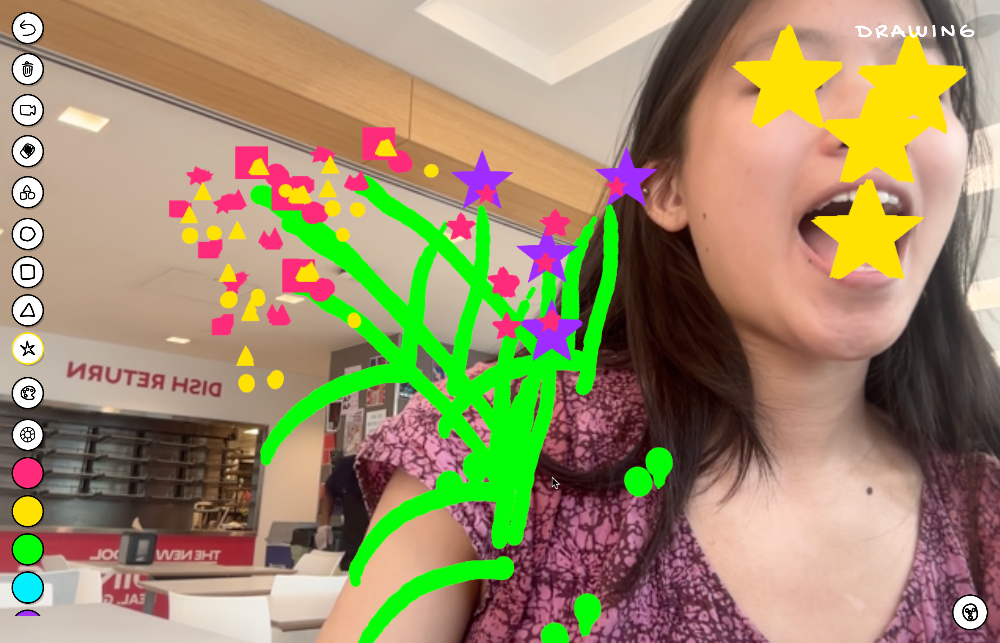
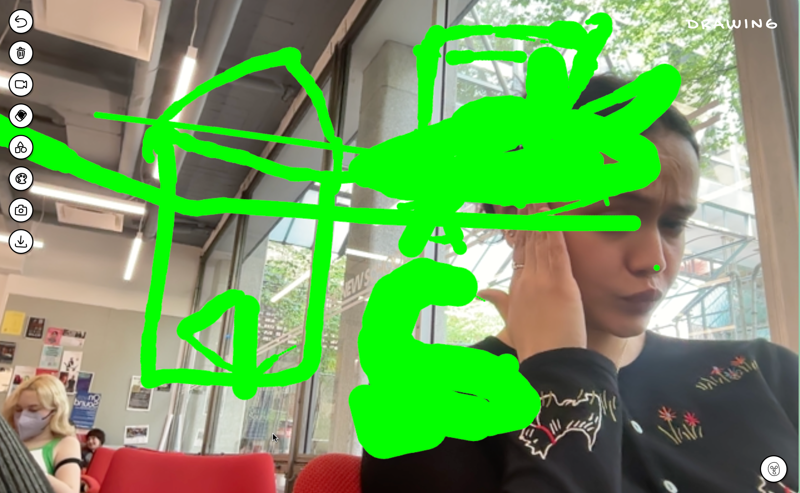
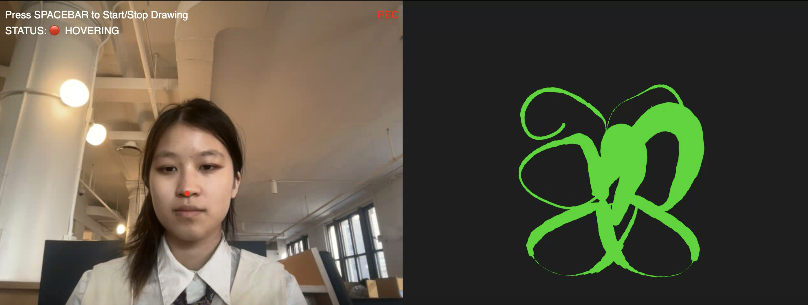
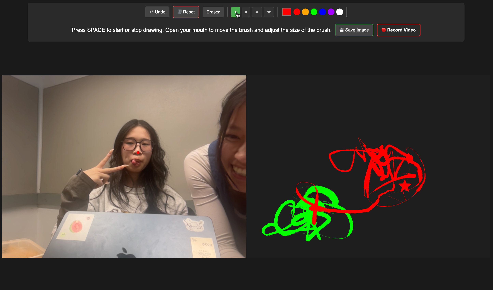

Prototypes
An interactive webpage using p5.js and the ml5.js library that allows its users to create illustrations by tracking different parts of their face. The user can adjust the brush size by opening and closing their mouth, and moving the brush by moving their head around. The intended usage of the tool was for play and experimentation, encouraging the user to explore the ways physical motion can be translated into a digital illustration.

